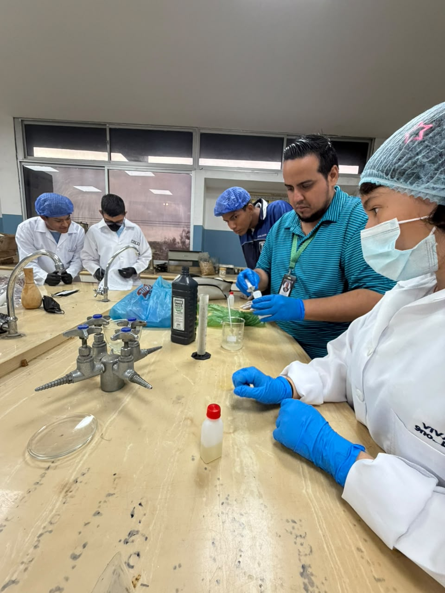
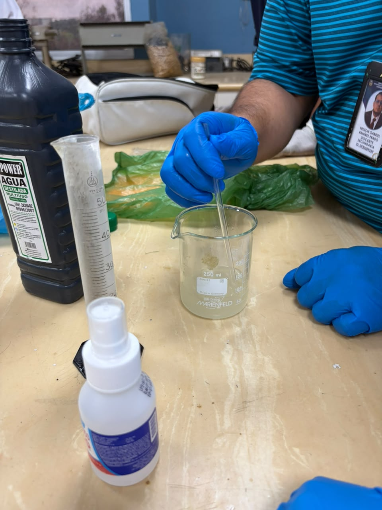
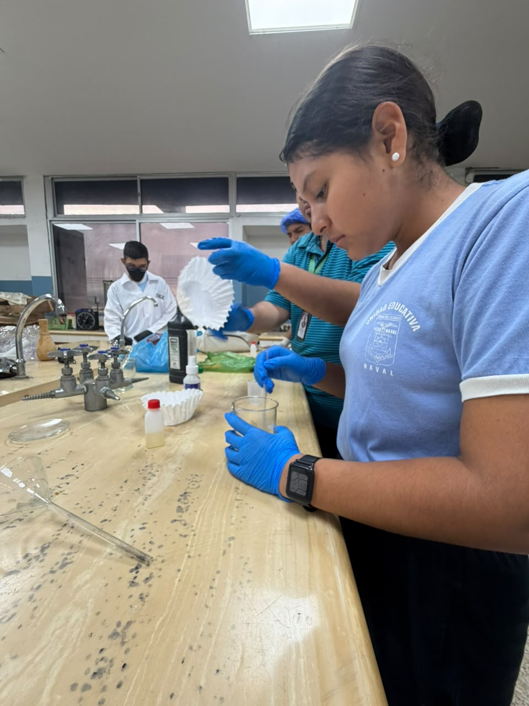
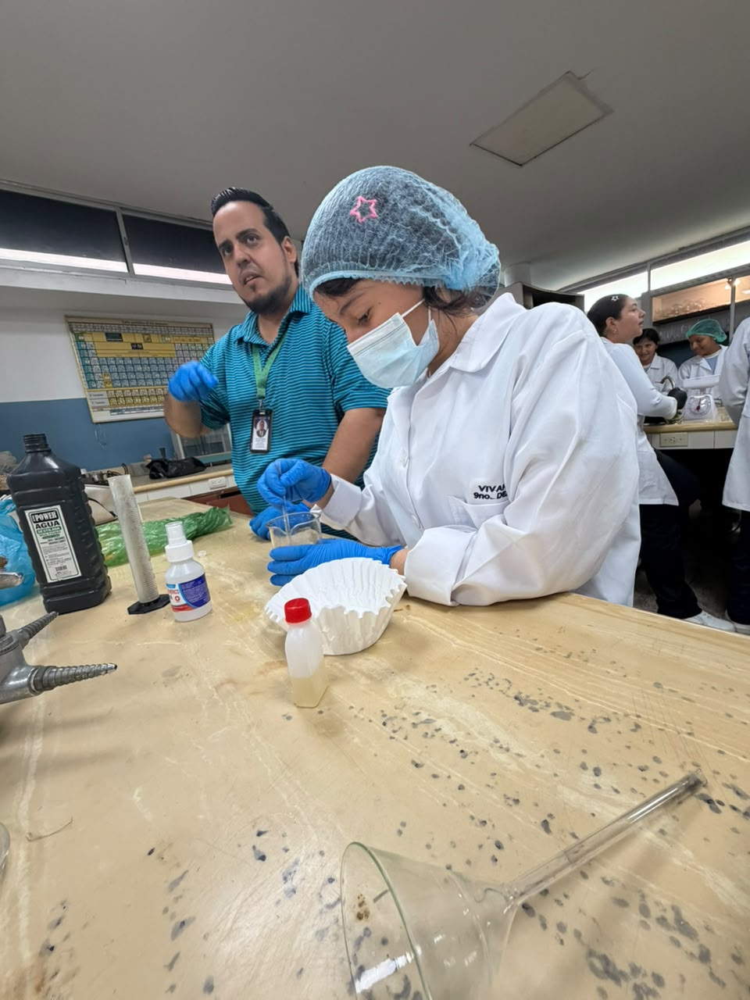
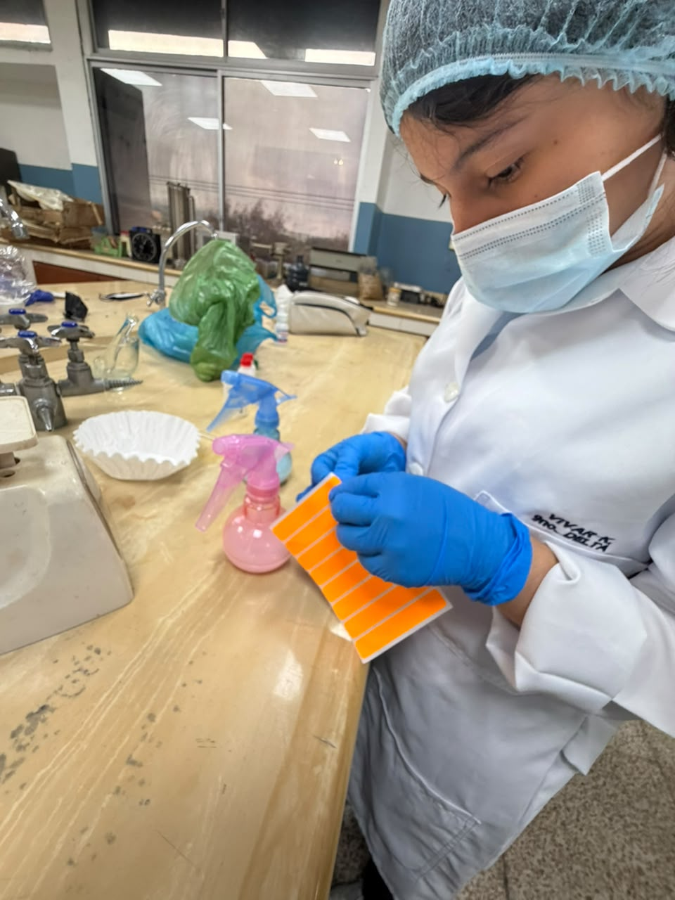
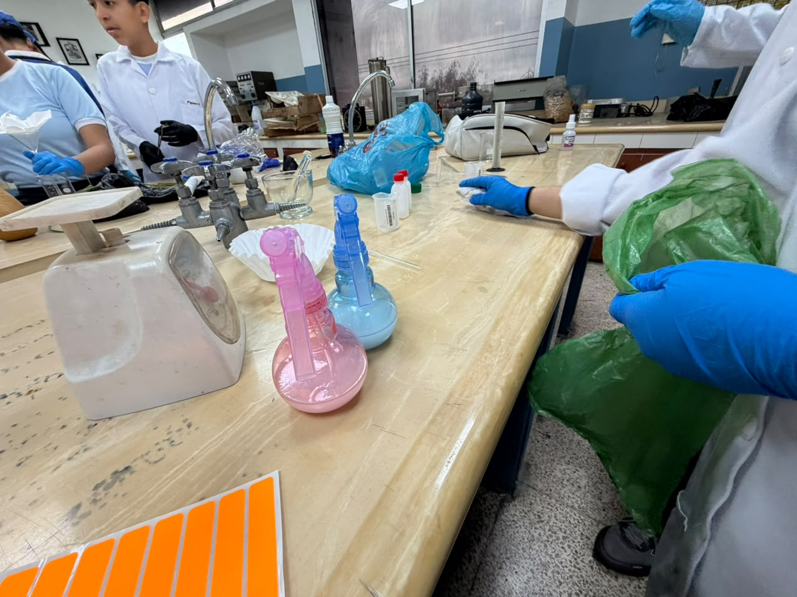

Introducción
Los mosquitos pueden causar molestias y algunos pueden transmitir enfermedades. Por esta razón, es importante conocer las medidas de prevención y el uso responsable de los repelentes.
El proyecto Navi-Biorepel, presentado en el blog Escudo Natural, investiga la elaboración de una propuesta de repelente utilizando esencias de citronela y clavo de olor.
Objetivos
Objetivo general
Investigar la elaboración de un repelente a base de esencias de citronela y clavo de olor, fomentando el conocimiento sobre prevención y uso responsable de estos productos.
Objetivos específicos
- Conocer las características de la citronela y el clavo de olor.
- Identificar los materiales utilizados en el proyecto.
- Registrar las etapas de preparación del producto.
- Documentar el proceso mediante fotografías.
- Promover medidas seguras para prevenir las picaduras.
Investigación
¿Qué son los repelentes?
Los repelentes son productos que ayudan a mantener alejados a insectos como los mosquitos. Su efectividad depende de sus ingredientes, su concentración y la forma de aplicación.
Esencia de citronela
La citronela es una planta aromática de la que se obtiene una esencia utilizada en algunos productos repelentes. Su aroma puede ayudar a mantener alejados a ciertos insectos, aunque su eficacia y duración pueden variar.
Esencia de clavo de olor
El clavo de olor es una especia aromática que contiene compuestos como el eugenol. Se estudia por sus propiedades aromáticas y su posible actividad frente a algunos insectos.
Materiales
Para el desarrollo del proyecto se utilizaron los materiales necesarios para preparar y presentar la propuesta:
- Esencia de citronela.
- Esencia de clavo de olor.
- Recipiente para la preparación.
- Utensilios utilizados durante la elaboración.
- Envase para guardar la muestra.
- Materiales de protección e higiene necesarios.
La lista debe coincidir con los materiales que realmente se utilizaron durante el proyecto.
Metodología
El proyecto se desarrolló mediante una metodología práctica y descriptiva. Primero se investigaron las características de las esencias de citronela y clavo de olor; después se organizaron los materiales y se registraron las etapas de elaboración.
Finalmente, se tomaron fotografías como evidencias del trabajo y se organizó la información para presentar los resultados en este blog.
Procedimiento
- Investigar las características de las esencias seleccionadas.
- Reunir y organizar los materiales utilizados en el proyecto.
- Preparar la muestra siguiendo las indicaciones y medidas de seguridad establecidas para la actividad.
- Guardar la muestra en un envase adecuado y debidamente identificado.
- Fotografiar las diferentes etapas del trabajo.
- Organizar las fotografías y redactar las conclusiones.
Nota: este apartado describe las etapas generales del proyecto. Si necesitas explicar las cantidades exactas o la mezcla realizada, añade únicamente los datos que utilizaron realmente en clase y que hayan sido verificados como seguros.
Evidencias de la elaboración
Fotografías del proceso de elaboración de Navi-Biorepel. La última evidencia corresponde al producto terminado.

Evidencia 1: Elaboración

Evidencia 2: Elaboración

Evidencia 3: Elaboración

Evidencia 4: Elaboración

Evidencia 5: Elaboración

Evidencia 6: Producto final Navi-Biorepel
Importancia del proyecto
Este proyecto permitió relacionar la investigación científica con una actividad práctica. También ayudó a comprender la importancia de documentar un procedimiento, trabajar de forma organizada y considerar la seguridad al utilizar productos destinados a mantener alejados a los insectos.
Conclusión
La investigación sobre Navi-Biorepel permitió conocer más acerca de las esencias de citronela y clavo de olor y su estudio como posibles ingredientes de productos repelentes. La elaboración de la muestra y el registro fotográfico ayudaron a organizar y presentar el trabajo.
Sin embargo, para afirmar que la preparación repele mosquitos eficazmente o que es segura para la piel, se necesitan pruebas adecuadas. Por eso, se recomienda utilizar productos repelentes autorizados y seguir sus instrucciones.